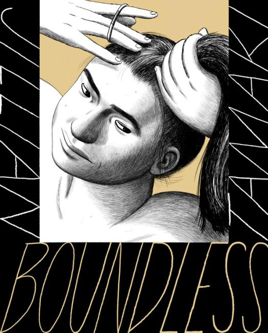

Creator: Jillian Tamaki
1 issue 2017 by Drawn & Quartery
At its core, Jillian Tamaki’s Boundless is a series of short stories examining concepts of connection. The ever-constant search for purpose. What makes the book feel simultaneously so contemporary and yet time-capsule specific is the pervasive lens through which this theme is explored: a chronicling of modern interactions with technology and culture, often with a focus on how the former has impacted the latter. In the age of tech, connection comes via consumption, relationships with culture defining relationships with people, and defining the individual self.
But people don’t change. As much as the means, modes and dressing may alter, human nature remains constant. People want belonging, place, fulfilment, to feel part of it all, or part of something.
-
In “Body Pods,” a woman charts her partners in relation to their enthusiasm for a cult film. Developments in the actors’ lives and the production of a remake parallel events and meaning in her own.
-
“Jenny” posits a mirror Facebook, where information gleaned from the site is used to create another “you.” The titular character becomes fixated on the differences between her and her mirror self’s lives—the possibilities of alternative, better paths.
-
“Sex Coven” is an internet fable about a strange music file that takes on mythic qualities. At first it’s overlooked, gaining a small following, an object of popularity and misunderstood hysteria, before becoming a thing around which commercialism and “irony” arise.
-
In “Darla!” a retro sitcom finds a new life on the internet, giving its director renewed relevance as he makes the convention circuit rounds, even as he worries he’s part of a joke and that people aren’t “getting it” the way it was intended.
Boundless is many things: contemplative, cynical, amusing, surreal, but mostly it anchors Tamaki as a formidable essayer of modern life, and undeniably one of the finest cartoonists of this generation.